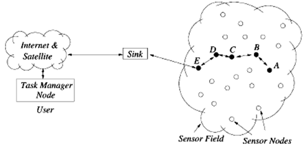
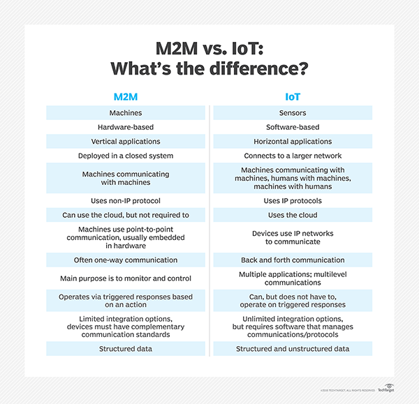
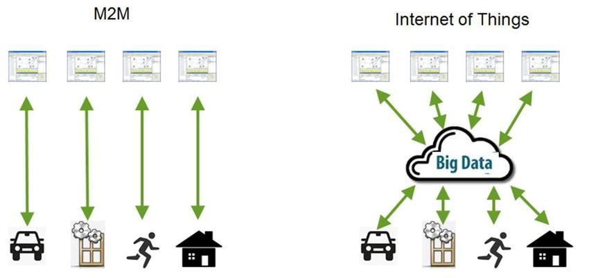
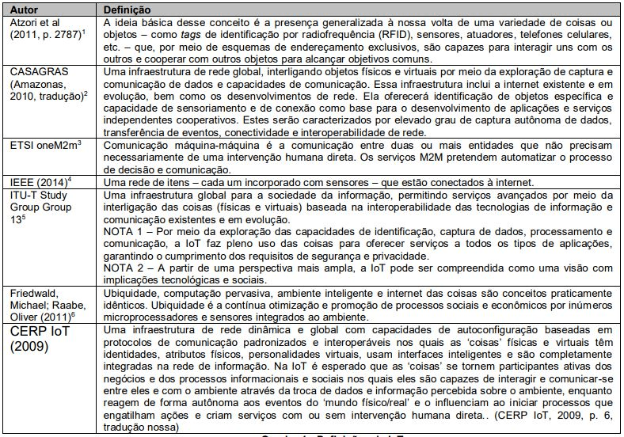
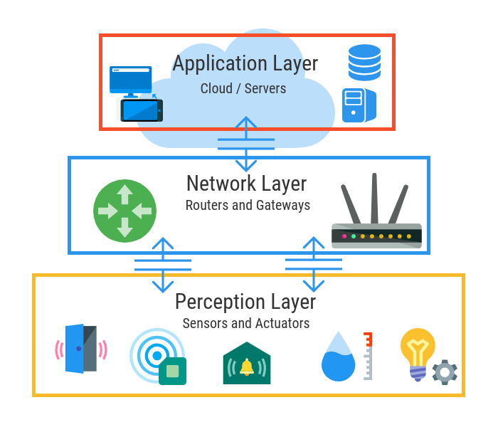
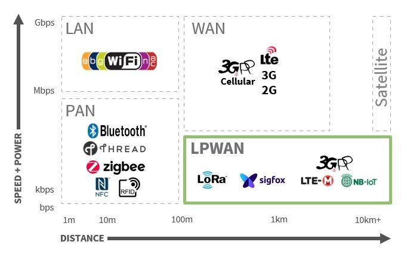
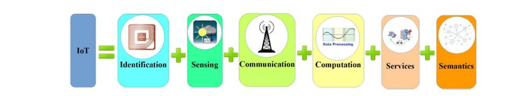
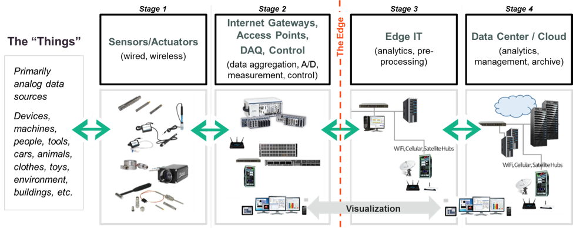
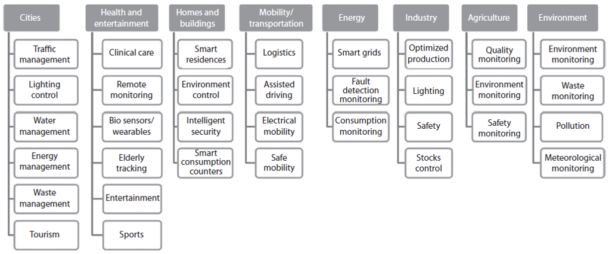

INTERNET DAS COISAS: UM DESENHO DO FUTURO
Quando falamos de revolução tecnológica, a noção de Internet das Coisas, ou Internet of Things (IoT), é um dos assuntos principais. É um fenômeno atual, mas que continua a se desenvolver e vai desenhar nosso futuro de uma forma completamente inédita. E não é difícil entender o porquê. Suas possibilidades são inúmeras, a Internet das Coisas está transformando nossa relação com a tecnologia, mudando o modo como interagimos com o mundo e, principalmente, o modo como o mundo interage conosco. É um conceito capaz de mudar não só como nós vivemos, mas também como trabalhamos.
MAS AFINAL, O QUE É A INTERNET DAS COISAS (IoT) ?
De uma forma bem simples, Internet das Coisas é o modo como os objetos físicos estão conectados e se comunicando entre si e com o usuário, através de sensores inteligentes e softwares que transmitem dados para uma rede. Como se fosse um grande sistema nervoso que possibilita a troca de informações entre dois ou mais pontos. O resultado disso é um planeta mais inteligente e responsivo. Agora podemos entender melhor como essas coisas funcionam, e como funcionam juntas para melhor nos servir. Mas de que “coisa” estamos falando? A resposta é qualquer coisa. Desde um relógio ou uma geladeira, até carros, máquinas, computadores e smartphones. Qualquer utensílio que você consiga imaginar pode, teoricamente, entrar para o mundo da Internet das Coisas. Eles conversam entre si para nos dar mais conforto, produtividade, informação e praticidade em geral, e seus usos podem abranger monitoramento de saúde, fornecimento de informação em tempo real sobre o trânsito da cidade ou o número de vagas disponíveis em um estacionamento e em que direção elas estão, até recomendação de atividades, lembretes, ou conteúdo em seus dispositivos conectados. Coisas do cotidiano se tornam inteligentes e têm suas funções ampliadas por cruzamento de dados. É o que acontece quando um assistente virtual cruza dados dos seus dispositivos conectados para te informar, mesmo que você não tenha pedido, o tempo que você levará para chegar ao trabalho quando você senta no seu carro para sair de casa. Ele não sabe onde você vai por magia, e sim pela interconectividade dos dispositivos inteligentes à sua volta; ou seja, pela Internet das Coisas. O assistente conhece sua rotina, e dado o horário, dia da semana, sua localização por GPS conexão (ou não) ao Wi-fi de casa, a conexão ao bluetooth do carro no momento específico, e ao fato de que esse cenário se repetiu muitas vezes, ele aprendeu que é muito provável que você esteja indo para o trabalho de carro e te informa quanto tempo você vai demorar para fazê-lo.
A Internet das Coisas ou Internet of Things (IoT) desponta como uma evolução da internet e um novo paradigma tecnológico, social, cultural e digital. A Internet das Coisas revolucionará os modelos de negócios e a interação da sociedade com o meio ambiente, por meio de objetos físicos e virtuais, em que esses limites se tornam cada vez mais tênues. A Internet das Coisas proporciona aos objetos do dia a dia, com capacidade computacional e de comunicação, se conectarem à internet. Essa conexão viabilizará controlar remotamente os objetos, e acessá-los como provedores de serviços, e se tornarão objetos inteligentes ou smart objects. Os objetos inteligentes possuem capacidade de comunicação e processamento aliados a sensores. Atualmente não só computadores convencionais estão conectados à internet, como também uma grande heterogeneidade de equipamentos, tais como TVs, laptops, geladeira, fogão, eletrodomésticos, automóveis, smartphones, entre outros. Nesse novo cenário, a pluralidade é crescente e previsões indicam que mais de 50 bilhões de dispositivos estarão conectados em 2020 . Com o uso dos objetos inteligentes será possível detectar seu contexto, controlá-lo, viabilizar troca de informações uns com os outros, acessar serviços da internet e interagir com as pessoas. Em paralelo, uma gama de novas possibilidades de aplicações surge, como, por exemplo, cidades inteligentes (smart cities); saúde (smart healthcare); casas inteligentes (smart home) e desafios emergem (regulamentações, segurança, padronizações). Essas novas habilidades dos objetos inteligentes gerarão um grande número de oportunidades de pesquisas e projetos no âmbito acadêmico e empresarial.
HISTÓRIA DA INTERNET DAS COISAS
Em 1990, John Romkey criou o primeiro dispositivo em internet das coisas. Esse autor criou uma torradeira que poderia ser ligada e desligada pela Internet e a apresentou na INTEROP '89 Conference. Dan Lynch, presidente da Interop na época, prometeu a John Romkey que, se a torradeira fosse ligada pela internet, o aparelho seria colocado em exposição durante a conferência. Diante desse desafio, John Romkey conectou a torradeira a um computador com rede TCP / IP, e foi um tremendo sucesso. Porém, durante esse teste, o pão foi incluído manualmente na torradeira. Após um ano, esse requisito foi corrigido e apresentado na mesma conferência, por meio de um pequeno guindaste robótico no sistema (Figura 1). Esse robô era controlado pela Internet, pegou a fatia de pão e colocou na torradeira, automatizando, dessa forma, o sistema de ponta a ponta (DEORAS, 2016).

Em 1991, Weiser (1991) escreveu o artigo The Computer for the 21st Century, que aborda o futuro da Internet das Coisas. Esse autor chama de “computação ubíqua”. No artigo, o autor afirma que os dispositivos serão conectados em todos os lugares de forma tão transparente para o ser humano, que se tornará “invisível”, possibilitando, de forma natural, a realização das atividades, sem haver preocupação em instalar, configurar e manter os recursos computacionais (WEISER, 1991; GALEGALE et al., 2016). Este artigo é um marco na pesquisa sobre Internet das Coisas e é citado praticamente em toda a literatura sobre esse assunto (SINGER, 2012).
Em 1996, Venkatesh (1996) também estudou o uso da computação no ambiente de trabalho e no lar, parecido com o conceito de Internet das Coisas. Ele previu que as tarefas da casa, por exemplo, preparação de alimentos ou compras para reposição de estoques, seriam realizadas através de casas especializadas. Outra possível origem do termo Internet das Coisas é encontrado no trabalho (GREENFIELD, 1999). A autora delineou um cenário no qual objetos processam informação. Outro autor também de destaque foi Gershenfeld (1999), que publicou o livro When things start to think. Esse livro prevê e descreve algumas experiências de computação, nanotecnologia e preocupações relacionadas a emoções numa realidade de integração com os objetos que geram informação.
Em setembro de 1999, Kevin Ashton, cofundador e diretor executivo do Auto-ID Center, proferiu uma palestra para a Procter & Gamble, e apresentou uma nova ideia do sistema RFID para a rastreabilidade do produto na cadeia de suprimentos. Para chamar a atenção dos executivos, ele colocou no título da apresentação a expressão Internet of Things. Para Ashton (2009), os objetos do mundo físico poderiam se conectar à internet, criando um mundo mais inteligente (FINEP, 2015). Esse termo foi utilizado primeiramente por Kevin Ashton, considerado o criador desse termo (POSTSCAPES, 2017a). Após 1999, a tecnologia RFID se destacou, sobretudo nas aplicações de cadeia de abastecimento. Seu prestígio aumentou no lançamento oficial da EPC – Network Electronic Product Code, ou código eletrônico do produto, criado pelo Auto-ID Center em setembro de 2003. O código eletrônico do produto permite a identificação automática dos objetos, mesmo de forma semelhante, possibilitando seu monitoramento na cadeia de suprimentos e gerenciando inventários.
Em janeiro de 2005, Wall Mart e o Departamento de Defesa dos Estados Unidos exigiram que os fornecedores utilizassem as etiquetas RFID nos paletes de seus produtos para o controle do estoque. Esse foi o marco do início do conceito da Internet das Coisas, com o uso do sistema RFID em massa na cadeia de suprimentos. Em junho de 2000, a LG apresentou uma geladeira inteligente durante um evento na Coreia do Sul, conectada à internet e gerenciada por meio de um sistema próprio. Na época, o presidente da LG dos Estados Unidos, Simon Kang, disse que a geladeira esfriava os alimentos, mas também os consumidores poderiam usá-la como televisão, rádio, vídeo, bulletin board, agenda e câmera digital (SINGER, 2012; GUMPTION, 2016).

A partir de 2005, a discussão sobre Internet das Coisas se generalizou e ganhou atenção dos governos em relação à privacidade e segurança de dados. Nesse ano, a International Telecommunications Union (ITU) publicou um relatório com o conceito de Internet das Coisas, com uma visão abrangente e holística. No seu ponto de vista, internet das coisas poderia conectar qualquer objeto, por meio de tecnologias, como RFID, sensores, rede de sensores sem fio, sistemas embarcados e nanotecnologia, além de transpor alguns desafios importantes como padronização, privacidade, espectro de frequência e questões sociais e éticas (FREITAS DIAS, 2016). Ainda em 2005, foi o lançamento do Nabaztag – um objeto com forma de coelho conectado à internet, que poderia ser programado para receber previsão do tempo e ler e-mails, entre outros. O Nabaztag foi o primeiro objeto inteligente comercializado em larga escala (SINGER, 2012).
Em 2008-2009, segundo a Cisco IBSG – Internet Business Solutions, havia mais objetos conectados, tais como smartphones, tablets e computadores, do que a população mundial. Por isso esse período é considerado o ano do nascimento da Internet das Coisas (ALI; ALI, 2015; POSTSCAPES, 2017a). Em 2008, Rob Van Kranemburg publicou o livro The Internet of Things, que aborda sob um novo paradigma em que os objetos produzem informação. Esse livro é uma das grandes referências teóricas sobre Internet das Coisas (SINGER, 2012). Ainda em 2011, o termo Internet das Coisas foi adicionado ao Gartner Hype Cycle 2011 e em 2014.

Também em 2011 foi discutida a criação de padrões internacionais para a criação de objetos conectados no panorama global. O International Telecommunications Union (ITU) vem reunindo especialistas para a consolidação de um padrão global.
Em março de 2012, a União Europeia propôs uma consulta pública para que os cidadãos apontassem suas necessidades e seguranças em Internet das Coisas.
Em 16 e 17 de junho, Londres sediou o 1º Open IoT Assembly. A partir de 2015, a Internet das Coisas já é uma realidade e cerca de 4,9 bilhões de coisas estão conectadas e em uso, um aumento de 30% em relação a 2014, e que atingirá 25 bilhões até 2020. A Internet das Coisas tornou-se uma força poderosa para a transformação dos negócios e seu impacto disruptivo em todas as indústrias e na sociedade (GARTNER, 2014b).
Atualmente a Internet das Coisas recebe atenção e suporte da Comissão Europeia (CE) por meio do Programa Horizon 2020, o maior programa de Pesquisa e Inovação da União Europeia (EU), com cerca de 80 milhões de euros de financiamento disponíveis ao longo de 7 anos – período de 2014-2020 (HORIZON 2020).
INTERNET DAS COISAS: DIFERENTES VISÕES E CONCEITOS
A Internet das Coisas(IoT) não é um conceito que surgiu do nada, existem algumas tecnologias que contribuem para sua criação, como Redes de sensores sem fio (WSN) e comunicação máquina a máquina (M2M).
Redes de sensores sem fio (WSN):
- Ele consiste em uma série de nós de detecção sem fio que se comunicam em vários saltos(multi-hop). - Ele é projetado, desenvolvido e usado para uma aplicação específica.
Algumas áreas de aplicação:
- Monitoramento ambiental
- Saúde
- Agricultura
- aplicações militares
- aplicações domésticas, etc ...
Para usar Redes de Sensores para fins de IoT, é necessário um middleware que resolva alguns problemas:
- Suporte de abstração
- Consolidação de dados
- Restrições de recursos
- Topologia dinâmica
- Informação da área de aplicação
- Abordagens de programação
- Adaptabilidade
- Escalabilidade
- Suporte de segurança e QoS
Comunicação entre máquinas (M2M):
- A comunicação M2M refere-se à comunicação direta com ou sem fio entre dispositivos usando qualquer canal de comunicação, que não requer intervenção humana direta.M2M é visto como o pioneiro da IoT.
- A comunicação M2M pode permitir que um sensor ou dispositivo de medição transmita os dados registrados para o software aplicativo que pode processá-los posteriormente.
- Destina-se a monitorar máquinas remotas das quais os dados são recebidos. Os dados processados em algumas centrais são transmitidos de volta para essas máquinas, se necessário, com parâmetros ajustados.
- A principal motivação para muitas organizações é reduzir os custos de gerenciamento de serviço por meio de diagnósticos remotos, solução de problemas, atualizações e outros recursos remotos que reduzem a necessidade de usar pessoal de serviço de campo.
 
O termo Internet das Coisas é um pouco confuso, não está bem definido nas pesquisas científicas, conferências realizadas no mercado e na academia, e está sujeito ao debate filosófico (RAIWANI, 2013; KRANENBURG, 2011). Muitas vezes, esse termo é chamado de physical internet, ubiquitous computing, ambient intelligence, machine to machine (M2M), industrial internet, web of things, connected environments, smart cities, spimes, everyware, pervasive internet, connected world, wireless sensor networks, situated computing, future internet, physical computing (POSTSCAPES, 2017b), ambient technology, ubiquitous technology, sensor web, sensor, network, wireless, sensor networks, smart dust, smart data, smart grid, cloud data, web 3.0, Object Naming System (KRANENBURG, 2011).
O Quadro a seguir, mostra alguns conceitos de Internet das Coisas encontrados na literatura:
As definições de Internet das Coisas expostas no Quadro incluem apenas as tecnologias, não se preocupando com o fator humano nesse relacionamento tecnológico entre as coisas. A definição do CERP IoT (2009) reúne diversos fatores que são a base da internet das coisas: uma rede global composta de objetos conectados, de agirem por conta própria, com ou sem supervisão humana (SINGER, 2012).
COMPONENTES DA INTERNET DAS COISAS
Componentes que compõem a infraestrutura da Internet das Coisas:- Arquitetura e Modelos de Referência
- Redes e conectividade
- Sistemas embarcados
- Sensores
- Atuadores
- Fontes de energia
- Definição
- Localizando
- Cloud e Fog Computing
Arquitetura e modelos de referência:
Existem muitas sugestões arquitetônicas e modelos de referência na literatura para definir o status atual ou futuro da IoT em termos técnicos:- Internet das coisas - Arquitetura (IoT-A)
- Arquitetura de Referência da Internet Industrial (IIRA)
- Modelo de Arquitetura de Referência Industrie 4.0 (RAMI 4.0)
- Modelo de referência de Internet das coisas da Cisco
Uma estrutura geral de alto nível de três camadas é a base para tecnologias relacionadas à IoT:
- Camada de objeto ou dispositivo
- Camada de link(Network)
- Camada de aplicação

Redes e conectividade:
Existem várias tecnologias de rede para conectar objetos em diferentes locais, que podem variar de acordo com a área de aplicação.Mas, ao contrário de muitos dispositivos, os dispositivos IoT têm memória, fonte de alimentação e capacidade de processamento limitadas, e os protocolos tradicionais (especificamente, a pilha de protocolos TCP / IP) não são projetados com esses requisitos em mente.
Para esse propósito, protocolos de comunicação leves foram desenvolvidos nos últimos anos para criar interoperabilidade entre dispositivos IoT.
Principais exemplos de protocolos de comunicação baseados em IP padronizados para dispositivos IoT:
Na camada de aplicativo;
- IETF Constrained Application Protocol (CoAP)
- Message Queuing Telemetry Transport (MQTT)
Na camada de rede;
- IPv6 e RPL (e uma versão para redes de área pessoal sem fio de baixa potência: “6LoWPAN”)
Na camada física;
- IEEE 802.15.4
Além desses, padrões de comunicação conhecidos como Bluetooth, Wi-Fi e GSM são usados para trocar dados entre aplicativos, dispositivos e objetos.
O objetivo de "Low Power, Wide Area Networks" (Low Power, Wide Area Networks, LPWAN) tornou-se um problema central para a IoT nos últimos anos.
LPWAN é um termo amplo para uma variedade de tecnologias usadas para conectar sensores e controladores à Internet sem usar redes Wi-Fi ou celulares tradicionais.
Ao mesmo tempo, grandes empresas de comunicações de rede celular também estão desenvolvendo padrões de rede baseados em celular, como LTE-M e NB-IoT. Em particular, o NB-IoT é suportado pelos principais fabricantes e pelas 20 maiores operadoras móveis do mundo.
Outros exemplos de atividades que definem novos padrões mais adequados para casos de uso de IoT incluem LoRa e Sigfox.
Os tópicos de design predominantes em redes e conectividade:
- Baixo consumo de energia (mais de 10 anos de trabalho independente)
- Forte penetração / cobertura em ambientes internos / internos
- Vinculando vários sensores e dispositivos com requisitos de baixa largura de banda
A tabela “Tecnologias e padrões de comunicação IoT” resume os protocolos e padrões de comunicação selecionados que estão sendo pesquisados ou em uso.

Sistemas embarcados:
O mundo imaginado com computadores em todos os lugares não será realizado com a instalação de computadores em cada esquina da rua. Em vez disso, a funcionalidade será incorporada em objetos e espaços. Esses desenvolvimentos apoiam a difusão geral das tecnologias de informação e comunicação e até permitem a inclusão de pequenos objetos de vida curta. Além do aumento de desempenho e capacidade, a eficiência energética dos componentes também é um fator importante. Novos desafios surgem para a interface do usuário ao colocar computadores ou componentes em objetos físicos. Monitores, teclados e outros dispositivos de entrada e saída comuns nem sempre fornecem a solução ideal, há uma necessidade de novas metáforas e interfaces de usuário que sejam particularmente adequadas para interação intuitiva.Sensores:
Sensores são componentes técnicos usados para medição qualitativa ou quantitativa de certas variáveis e propriedades químicas ou físicas (por exemplo, temperatura, luz, aceleração, eletricidade, etc.). Os valores medidos geralmente são convertidos em sinais eletrônicos. É possível ver sensores em muitos lugares em nossa vida diária. Por exemplo, os carros modernos têm centenas de sensores, sensores de chuva para sistemas de limpador de pára-brisa, sensores de colisão para sistemas de lançamento de airbag e rastreamento de faixa e sensores de estacionamento. Ou seja, o automóvel comum está se tornando cada vez mais um objeto computadorizado unificado. Além disso, sensores; Quando usado em conjunto com um processador (controlador), uma fonte de alimentação e uma unidade para transmissão de dados, é chamado de nó sensor. Função primária de um nó sensor; aquisição, pré-processamento e transmissão de dados do sensor de seu ambiente para outros nós sensores ou uma estação base.Algumas categorias e exemplos de sensores são os seguintes:
- Localização: GPS, GLONASS, Galileo
- Biométrica: impressão digital, íris, rosto
- Acústico: microfone
- Ambiente: temperatura, umidade, pressão
- Movimento: acelerômetro, giroscópio
Os sensores também são um componente muito importante do mundo IoT, pois são a base para objetos inteligentes e nós de sensores. Sensores WSN pequenos, robustos, baratos e de baixo consumo de energia serão capazes de levar a IoT até mesmo aos menores objetos localizados em qualquer ambiente a um custo razoável.
Atuadores:
Os atuadores permitem a intervenção ativa no sistema de controle e/ou configuração de variáveis, convertendo sinais elétricos (por exemplo, comandos do computador de controle) em movimento mecânico ou outras variáveis físicas (como pressão ou temperatura). Os tipos de atuadores podem ser listados como hidráulicos, pneumáticos, elétricos, mecânicos e piezoelétricos. A saída de sinais ópticos (via indicadores) ou acústicos também podem ser agrupados em atuadores, pois podem desencadear um efeito no ambiente real. Os atuadores desempenham um papel cada vez mais importante na execução das ações. Além disso, é um dos principais alicerces da Indústria 4.0, que se expressa como a "Quarta Revolução Industrial" na produção.Fonte de energia:
Embora muitas tecnologias estejam disponíveis atualmente ou pelo menos testadas em um contexto de pesquisa, alguns problemas técnicos permanecem que não podem ser resolvidos. Um dos fatores mais limitantes para a mobilidade de objetos inteligentes são as fontes de energia. Embora as baterias estejam ficando menores e mais potentes, os dispositivos móveis de hoje ainda têm capacidades de bateria muito limitadas. A extensa pesquisa em tecnologias avançadas de bateria fez uma melhoria relativamente pequena no desempenho da bateria. Mas esta tecnologia está constantemente atrasada em relação a outros desenvolvimentos tecnológicos relevantes, ela foi colocada em segundo plano. Para enfrentar esses desafios, muitos tópicos de pesquisa são perseguidos, incluindo projetos inteligentes que requerem menos energia da bateria. Ao contrário da ideia de que tudo deve estar sempre online, só às vezes basta saber o estado de um objeto. Isso pode ser alcançado com muito menos esforço e recursos em largura de banda e energia. Outra estratégia é coletar energia "em tempo de execução". Em outras palavras; Busca desenvolver tecnologias para o uso de fontes alternativas de energia como sol, vento e água e garantir sua integração em dispositivos portáteis. (Smartphones com células solares etc.)Identificação:
Um pré-requisito importante para relacionar informações com seres reais ao nosso redor é uma identificação clara de objetos e pessoas. O termo "tecnologias de Auto-ID (Auto-ID) e Mobilidade (AIM)" descreve várias subtecnologias que compartilham um propósito comum de identificar, rastrear, registrar, armazenar e transmitir dados comerciais, pessoais e de produtos importantes. Várias tecnologias de identificação, como biometria, códigos de barras e RFID estão disponíveis. As aplicações RFID conhecidas desde 1960 se tornaram um catalisador, especialmente para cenários de IoT. Os sistemas de identificação por radiofrequência (RFID) normalmente usam pequenas etiquetas com microchips embutidos que têm uma pequena quantidade de memória de computador e transmitem seu conteúdo por meio de sinais de rádio para leitores RFID específicos em uma curta distância. O leitor coleta esses dados, descriptografa-os e os envia por uma rede com ou sem fio a um computador host para processamento posterior. Na verdade, as etiquetas RFID podem ser consideradas códigos de barras eletrônicos. Mas, ao contrário dos códigos de barras, as etiquetas RFID não requerem contato visual para serem lidas. O leitor RFID consiste em uma antena com função de decodificação e um transmissor de rádio, podendo ser acoplado a um dispositivo fixo ou portátil. Os esquemas de endereçamento tornaram-se uma tarefa muito crítica para a identificação de objetos. O desafio no cenário de IoT é identificar bilhões de dispositivos com exclusividade e controlá-los para muitos cenários de aplicativos. Os desafios técnicos mais importantes são exclusividade, confiabilidade, continuidade e escalabilidade. O protocolo da Internet versão 6 (IPv6) e o código de produto eletrônico são blocos de construção importantes para a IoT. A ideia básica é encontrar informações sobre um objeto etiquetado (RFID) digitalizando um endereço de Internet ou um registro de banco de dados que corresponde a um código específico armazenado em uma etiqueta RFID. O Código de Produto Eletrônico (EPC) é o trabalho de desenvolvimento de um identificador universal que sempre fornece uma identidade única para cada objeto físico. Hoje, os conceitos são mais gerais e não se limitam apenas a RFID. Um objeto pode ser real / físico, mas também uma entidade virtual / digital que pode ser identificada exclusivamente por números de identificação, nomes e / ou endereços de localização atribuídos para um determinado período de tempo dentro de uma determinada área. Os conceitos correspondentes para objetos virtuais são Uniform Resource Identifiers (URIs) e endereços IP, que permitem identificar e descobrir a presença de um objeto na web.Localização:
Além da identificação, a localização de um objeto ou pessoa é uma das informações necessárias. As técnicas de geolocalização podem ser usadas para determinar a posição de um objeto externamente ou por si mesmo.Sistemas de posicionamento "globais":
- GPS (EUA)
- GLONASS (Rússia)
- Galileo (União Europeia)
- BeiDou (China)
Global Positioning Systems é um sistema de navegação por satélite baseado no espaço que fornece informações de espaço e tempo com quatro ou mais satélites em uma linha de visão desobstruída na Terra. É uma rede de satélites que envia informações codificadas regularmente e permite determinar a localização exata na Terra medindo a distância dos satélites. Por outro lado, GSM (o próximo ponto conhecido, o próximo ponto conhecido), WLAN (valores eletromagnéticos ou de radiação) e tecnologias de geolocalização interna (RSSI, CSI, AoA, ToF, TDoA, RToF, PoA, etc.) tecnologias.
Cloud Computing e Fog Computing:
Cloud Computing oferece excelentes recursos em termos de recursos de rede para armazenar e acessar dados relacionados ou obtidos de objetos conectados. No entanto, no que diz respeito a aplicativos sensíveis ao tempo que requerem nós no campo para atender aos requisitos de latência, a computação em nuvem pode ter algumas limitações, especialmente se milhões de dispositivos precisarem ser manuseados de maneira crítica. Podem surgir novos casos de uso que requeiram controle rígido de sensores ou atuadores fisicamente dispersos, mas especialmente colocados. Em resposta a estes desafios, é proposto o paradigma Fog Computing, que não substitui, mas expande, o paradigma da computação em nuvem. Fog Computing, uma plataforma altamente virtualizada, fornece serviços de computação, armazenamento e rede que não estão localizados na borda da rede entre os dispositivos finais e os centros de dados de computação em nuvem tipicamente tradicionais.

AREAS DAS APLICAÇÕES EM INTERNET DAS COISAS
As aplicações de Internet das Coisas são inúmeras e diversas, e permeiam praticamente a vida diária das pessoas, das empresas e sociedade como um todo, transformando o mundo em smart world (FREITAS DIAS, 2016; PATEL, PATEL, 2016). O smart world permite que a computação se torne “invisível” aos olhos do usuário, por meio da relação entre homem e máquina, tornando um mundo mais eficiente e eficaz.- Bens de consumo: Bens adquiridos pelos consumidores, tais como smartphones, smart house, smart car e smart TV.
- Saúde: Fitness, bioeletrônica e cuidados com saúde. Por exemplo: monitoramento e controle da frequência cardíaca durante os exercícios; monitoramento das condições dos pacientes em hospitais e em casas de idosos.
- Transporte inteligente: Notificação das condições de tráfego, controle inteligente de rotas, monitoramento remoto do veículo, coordenação das rodovias e integração inteligente de plataformas de transporte.
- Distribuição de energia (smart grid): Acompanhamento de instalações de energia, subestações inteligentes, distribuição de energia automática e medições remotas de relógios residenciais.
- Casas inteligentes: Medições remotas de consumo, economia de energia, controle inteligente de equipamentos residenciais e segurança residencial.
- Distribuição e Logística: Smart e-commerce, rastreabilidade, gerenciamento na distribuição e inventário.
- Segurança Pública: Monitoramento no transporte de cargas perigosas e químicas, monitoramento da segurança pública, monitoramento das estruturas de construções de utilidade pública.
- Indústria e Manufatura: Economia de energia, controle da poluição, segurança na manufatura, monitoramento do ciclo de vida dos produtos, rastreamento de produtos manufaturados na cadeia de abastecimento, monitoramento de condições ambientais e controle de processos de produção.
- Gestão da agricultura e dos recursos naturais: Segurança e rastreabilidade de produtos agrícolas, gerenciamento de qualidade, monitoramento ambiental para produção e cultivo, gerenciamento no processo de produção, utilização de recursos para a agricultura.
- Smart Cities:
Monitoramento estrutural: monitoramento de vibrações e condições dos materiais em edifícios, pontes e monumentos históricos.
Energia elétrica: iluminação inteligente e adaptável conforme a rua.
Segurança: monitoramento por meio de vídeo digital, gerenciamento de controle de incêndio e sistemas de anúncio público.
Transporte: estradas inteligentes com avisos, mensagens e desvios de acordo com as condições climáticas e eventos inesperados como acidentes ou engarrafamentos.
Estacionamento: monitoramento em tempo real da disponibilidade de espaços de estacionamento, sendo possível identificar e reservar vagas disponíveis.
Gestão de resíduos: detecção de níveis de lixo em recipientes para otimizar a rota de coleta de lixo.

Desafios para a área de gerenciamento de projetos
As organizações estão sempre à procura de melhores resultados e lucratividade, com projetos bem executados. Se por um lado existe demanda pelo gerente de projetos, por outro ele tem que estar preparado para os novos desafios empresariais. Esse novo paradigma, conhecido como Internet das Coisas, abre uma grande oportunidade de projetos que possam beneficiar as organizações, os indivíduos e a sociedade.Para os projetos relacionados à Internet das Coisas, os gerentes de projetos têm grandes desafios, entre os quais:
- Formas diferentes de conduzir os modelos de negócio e fluxos de gestão: Em virtude da complexidade de segurança, exigirá maior disponibilidade das informações, demandando altos investimentos e novos modelos de negócios;
- Novas maneiras de se relacionar com o mercado: Aperfeiçoar produtos e serviços será importante para enfrentar a concorrência e responder mais agilmente às tendências do mercado.
- Maior preocupação com segurança da informação: Crescente digitalização e automação dos milhares de dispositivos exigirão novos desafios de segurança;
- Padronização de protocolos / tecnologia: Big data, servidores, redes, protocolos, sensores, atuadores e demais componentes serão importantes para o desenvolvimento de uma plataforma de Internet das Coisas com custo acessível;
- Demanda de profissionais: Necessário investimento em educação para formar, capacitar e treinar profissionais de TI para atuar no mundo da internet das coisas. Um projeto de Internet das Coisas é multidisciplinar, pois engloba várias áreas, desde engenharia, software, banco de dados, data, redes, segurança, governança, gestão, projetos, liderança de equipes multidisciplinares, visão de negócio, mudanças de processos, entre outros, e não pode ser tratada como UMA tecnologia, mas como uma mudança de paradigma tecnológico e social, que mudará completamente a forma de se relacionar da sociedade e das organizações. Para tanto, o papel do gerente de projetos torna-se crucial para que esses projetos sejam desenvolvidos no escopo, prazo e custo planejados, avaliando os riscos inerentes ao projeto, buscando qualidade e fornecedores aptos a enfrentar esses novos desafios, gerenciando os stakeholders, comunicando a todos os envolvidos o andamento do projeto, liderando equipes e gerindo conflitos, tudo isso aliado a uma visão estratégica mercadológica, que traga benefícios para as empresas e aos cidadãos.
VANTAGENS E DESVANTAGENS DA INTERNET DAS COISAS
Como em qualquer área e inovações tecnológicas, na internet das coisas não é diferente, também tem suas vantagens e desvantagens.Vantagens
A ligação de todos os objetos por si só é uma vantagem exponencial, a medida que traz claros benefícios à sociedade, possibilitando um maior controle e compreensão da interação entre seus sistemas, sendo capaz de proporcionar uma melhor qualidade de vida à todos.Na indústria do retalho ou varejo, a substituição dos códigos de barras por tags detectável por rádio frequência oferecem vasta vantagem por permitir saber a localização exata de cada produto. Nas indústrias de modo geral, tags podem ser utilizadas para identificar localização, informar efeitos de procedimentos e fazer recomendações, como por exemplo, informar efeitos colaterais e a dose recomendado de um medicamento, identificar um animal doente num rebanho e informar a sua localização, permitindo controlar rapidamente a doença, bem como, informar as autoridades de trânsito a situação documental de um veículo que passou pela via.
Para as grandes empresas que demandam um contingente de profissionais para o controle de seus processos de produção, tem o fator econômico na possibilidade de redução de custo com funcionários, redução no consumo de energia, água entre outros, além de prevenir falhas, humanas ou não, permitindo que os profissionais se dedicam à funções mais estratégicas das empresas, enquanto as tecnologias realizam sua tarefas sem a necessidade de uma total supervisão.
Um dos grandes benefícios da tecnologia IoT está na tomada de decisões, por permitir acesso a dados quase que em tempo real, possibilitando aos gestores acesso as informações mais precisas, garantindo ganho de tempo em respostas de feedback aos superiores e gerenciadores de negócios.
Desvantagens
A falta de privacidade, a segurança e a confiabilidade dos dados se apresenta como a maior desvantagem quando falamos em internet das coisas, tornando imperiosa a necessidade de soluções sólidas ao ponto de garantir a privacidade e segurança dos dados e informação das pessoas, possibilitando a existência da adoção de qualquer sistema de identificação de objetos. Com a tecnologia de protocolo de transmissão de endereços de dados IPV4 operando no seu limite de funcionamento, sendo que apenas um volume pequeno da internet e infraestrutura migrou para o IPV6, uma das desvantagens é a limitação de endereçamento de objetos.A limitação do tempo das baterias dos sensores, também é outra desvantagem, pois a troca de baterias em milhões espalhados globalmente não é uma tarefa fácil e viável. Num conceito onde o tempo é a moeda de troca valiosa, torna-se necessário que a tecnologia acompanhe e que sensores e dispositivos se tornem autossustentável.
Para que a internet das coisas tenha uma aceitação confiável, será necessário aplicação de soluções de segurança com maior credibilidade. A segurança e a privacidade é primordial para oferecer serviços de confidencialidade e integralidade das questões relacionadas com a identidades das pessoas, sendo de importância crucial para a proteção da sociedade como um todo.
TECNOLOGIAS DE COMUNICAÇÃO E DE DESENVOLVIMENTO EM INTERNET DAS COISAS
Tecnologias de Comunicação em Internet das Coisas:
- Curto alcance: Bluetooth, Zigbee, ANT, RFID- Distância média: Wi-Fi, cellular
- Longa distância: LoRa, NB-IoT, SigFox
Tecnologias de Desenvolvimento em Internet das Coisas:
- Linguagens de programação simples: Arduino, (micro) Python- Protocolos de comunicação em nuvem: HTTP, MQTT, CoAP
- APIs e frameworks poderosos: REST, THREADX, IFTTT
- Formatos de dados: XML, JSON, YAML
- Plataformas de nuvem: AWS, GCP, Microsoft Azure
- Ferramentas de visualização: Kibana, Highcharts, Chart.js
PLANEJAMENTO E INTRODUÇÃO DOS PROJETOS
Vamos utilizar oneM2M como um padrão de assunto de IoT, os tópicos são os seguintes:Internet das coisas (IoT):
Identificadores únicos de objetos físicos fornecidos para conectar e trocar dados com outros dispositivos, incluindo sensores, software e outras tecnologias, e dispositivos inter-relacionados capazes de transmitir dados por uma rede sem a necessidade de interação humano-humano ou humano-computador.
OneM2M:
É uma iniciativa de padrões globais para comunicação máquina a máquina e Internet das coisas.
Eclipse OM2M é o nome da plataforma de código aberto simples que vamos utilizar. E para a plataforma mais avançada vamos utilizar o Mobius.
Eclipse OM2M:
Uma implementação de código aberto do padrão oneM2M e SmartM2M. Ele fornece uma plataforma de serviço M2M horizontal para desenvolver serviços independentemente da rede subjacente, a fim de facilitar a implantação de aplicativos verticais e dispositivos heterogêneos.
Mobius:
Plataforma de servidor IoT de código aberto baseada no padrão oneM2M. Como OneM2M aponta, Mobius fornece funções de serviço comuns (por exemplo, registro, gerenciamento de dados, assinatura / notificação, segurança) como middleware para aplicativos IoT de diferentes áreas de serviço.
A ferramenta que vamos utilizar para fazer experiências com Eclipse OM2M e Mobius chama-se Postman.
Postman:
É uma plataforma de colaboração para o desenvolvimento de APIs. Os recursos do Postman tornam cada etapa da criação da API mais fácil e a colaboração mais fácil, para que possamos construir APIs melhores.
OneM2M COMO UM PADRÃO DE IoT
OneM2M:Como um padrão IoT, oneM2M é uma iniciativa de padrões globais para comunicação máquina a máquina e Internet das coisas.
O software de middleware fornece uma camada de serviço IoT arquitetônica padronizada pelo OneM2M, ou seja, entre o hardware de processamento / comunicação e os aplicativos IoT, fornecendo um conjunto rico de funções necessárias para muitos aplicativos IoT.
Descrição Arquitetônica funcional de OneM2M
OneM2M define uma arquitetura horizontal que fornece funções de serviço comuns que permitem aplicativos em vários domínios usando uma estrutura comum e APIs uniformes.O modelo oneM2M contém três camadas:
- camada de aplicação;
- Camada de serviços comuns;
- camada de serviços de rede principal.

A arquitetura funcional OneM2M inclui as seguintes Entidades:
Entidade de aplicação (AE):É Uma entidade que implementa uma lógica de serviço de aplicativo M2M na camada de aplicativo.
Entidade de serviços comuns (CSE):
Representa uma instância do conjunto de "funções de serviço comuns" do nível de serviço oneM2M.
Entidade de serviços de rede (NSE):
Fornece serviços da rede principal.
ECLIPSE OM2M
Eclipse OM2M:
O projeto Eclipse OM2M iniciado por LAAS-CNRS é uma implementação de código aberto do padrão oneM2M e SmartM2M. Ele fornece uma plataforma de serviço M2M horizontal para desenvolver serviços independentemente da rede subjacente, para facilitar a implantação de aplicativos verticais e dispositivos heterogêneos.
Plataforma baseada em padrão:
OM2M implementa o padrão oneM2M e SmartM2M. Que fornece uma Entidade Comum de Serviço (CSE) horizontal que pode ser implantada em um servidor M2M, gateway ou dispositivo para cada CSE, ativação de aplicativo, segurança, Fornece gatilho, notificação, persistência, interoperabilidade de dispositivo, gerenciamento de dispositivo.
API RESTful:
OM2M é primitivo para autenticação de máquina, descoberta de recurso, registro de aplicativo, gerenciamento de contêiner, comunicação simultânea e assíncrona, autorização de direitos de acesso, organização de grupo e redirecionamento que oferece uma API RESTful que fornece procedimentos.
Modularidade e extensibilidade:
OSGi (Open Services Gateway initiyive) é um aplicativo Java executado acima do tempo de execução do Equinox e o torna altamente extensível por meio de plug-ins. Ele foi criado como um produto Eclipse usando Maven e Tycho. Cada plugin oferece uma funcionalidade específica e pode ser instalado, iniciado, interrompido, atualizado e desinstalado remotamente sem a necessidade de reinicialização.
Java 1.7 ou versão superior é necessário para executar OM2M.
Download do pacote Eclipse OM2M:
Para instalar o pacote Eclipse OM2M, optamos por baixá-lo do site Eclipse OM2M uma plataforma de código aberto para comunicação M2M. Depois de entrar no site vamos para as últimas versões de Dev Releases da seção OM2M / Download.- O pacote baixado contém as pastas in-cse e mn-cse.
- Arquivos de configuração in-cse\configuration\config.ini e mn-cse\configuration\config.ini.
- Existem in-cse\start.bat e mn-cse\start.bar para executar aplicativos.